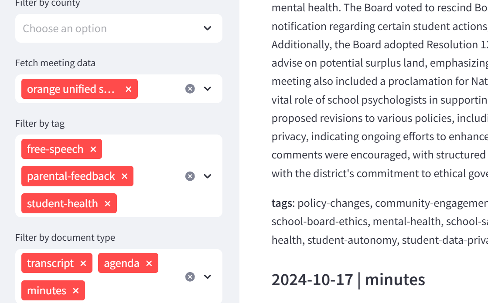
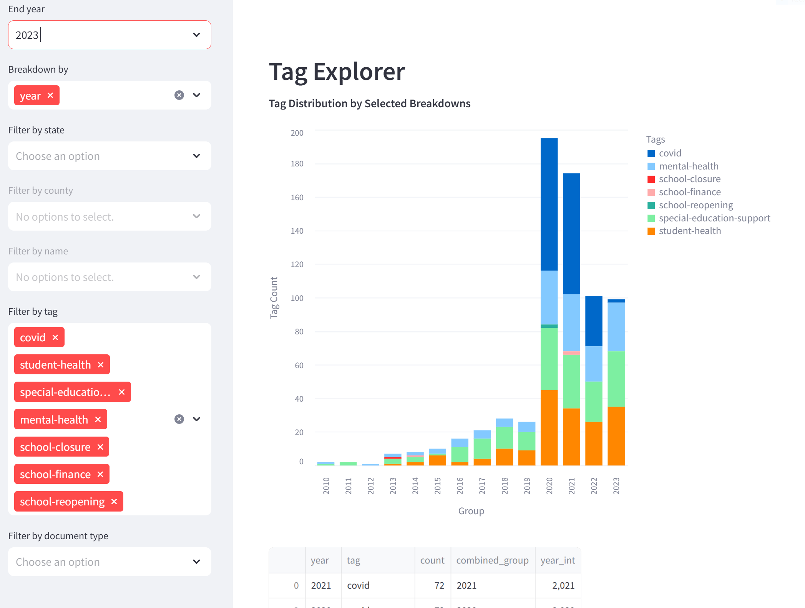
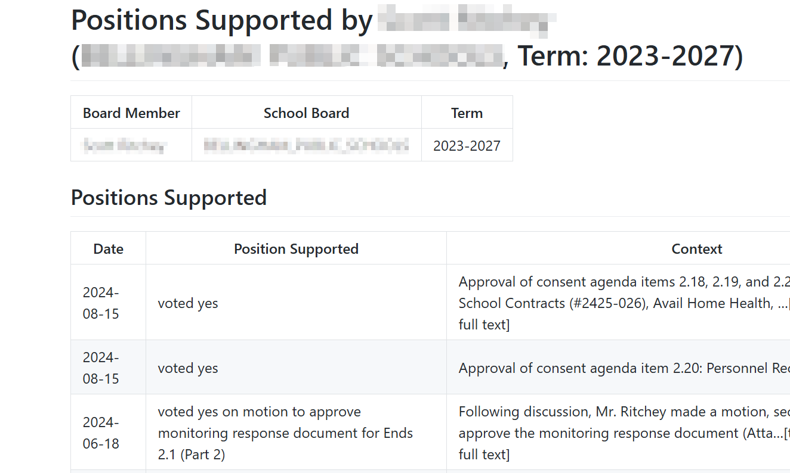

Gender-Identity Sentiment
Washington State, 2010 - Dec 2024
Positive/negative sentiment regarding the topic of Gender Identity across 15 years.
434 citations out of 100,000+ documents



General-purpose AI research is powerful but pricey at scale. We pre-crawl and pre-process niche public data so you ask questions and get answers in seconds-not hours.
We pre-fetch and pre-process data specific to your domain, so your research is faster, cheaper and more robust than a general purpose tool could provide. In Computer Science terms we are making a classic space-time tradeoff. A time tested model for improving performance that is more relevant than ever in the age of AI, because inference is expensive and space is cheap.
LLM-guided agents navigate sites and playlists—each file is fetched once.
OCR, transcription & entity linking turn raw PDFs & clips into clean records.
Relational + vector storage powers AI assisted search and reports.
Each dataset is exported straight from our AI-assisted research tool. You get the original prompt, the auto-gathered sources, and the assistant’s structured analysis-ready to filter, cite and reuse.
Positive/negative sentiment regarding the topic of Gender Identity across 15 years.
434 citations out of 100,000+ documents
A categorization of discussions around removing materials from school libraries or curriculums.
174 citations out of 92,660 documents
Discussions or mentions of agreements between local community colleges and high schools.
64 citations out of 30,567 documents
Contracts, memos and other records indicating accessibility requirements for edtech products.
272 citations out of 38,819 documents
A detailed list of which tech products are being used, purchased or discussed in West Virginia Schools.
235 citations out of 37,598 documents
A complete scrape of West Virginia school board documents during the 2024-2025 school year.
55 districts, 46573 files
Preview →"Morgan's tool is groundbreaking for our work .. She's extremely skilled at processing a real world situation and applying it to tool development. The work she's done in the most useful and thoughtful application I've seen of AI ..."
on using our platform to model upcoming elections across hundreds of school districts.
"Morgan is hands down one of the smartest, coolest, most incredible and creative people I have had the
privilege of working with ..."
after using BoardLink to track disbursements from municipal contracts.
Hello, I'm Morgan Foster. I began my career in software over fifteen years ago, working on solid state physics research and writing analysis software for X-ray Diffraction machines. Since then I've had the good luck to work on site reliability at Facebook, Google and Twitter - and to make some fun contributions to the Firefox Web Browser.
• Re-implementing JavaScript’s Array.sort
(diff)
and landing multiple ES6 features
(commits).
• Being an early contributor to WebAssembly’s flagship runtime,
Wasmtime 🎯.
• Adding links to developer documentation from console errors,
MozFR post.
I founded Noosphere Analytics to solve a problem I encountered doing public-interest research: how to get a top-down view of K-12 education in the U.S.’s fragmented public school system. That required building a “smart pipeline” - an end-to-end system that automates the process of gathering, cleaning, and organizing scattered public data.
Today, that system powers research not just in education, but anywhere institutional data is hard to collect and harder to understand. I’m excited to see how my clients are using it - and how we can keep expanding what’s possible with civic data.